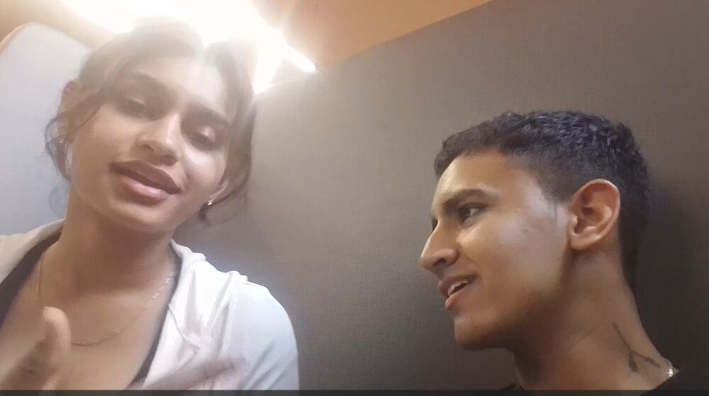

for prapti
keep going
okay, confession time.
it's been 2 days since you left,
and somehow my phone still thinks you're typing.
sms sms sms sms sms —
(yeah. that was me. the whole time.)
there's no "other friend."
there's just been a very quiet couple of days,
and a very loud amount of missing you.
so — sorry for teasing you on that call.
you're the only cutie i miss.
ur the only cutie i miss
and i loved this territorial side... its v hot 👀